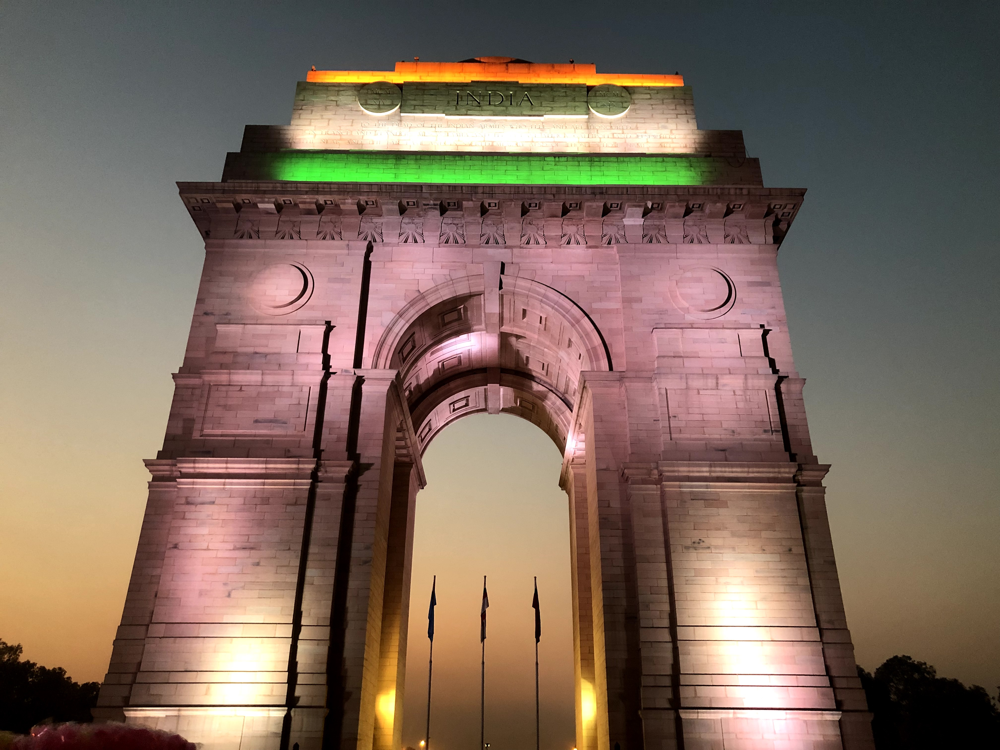

India Gate
The India Gate (formerly known as All India War Memorial) is a war memorial located near the Rajpath (officially called Kartavya path) on the eastern edge of the "ceremonial axis" of New Delhi. It stands as a memorial to 74,187 soldiers of the Indian Army who died between 1914 and 1921 in the First World War, in France, Flanders, Mesopotamia, Persia, East Africa, Gallipoli and elsewhere in the Near and the Far East, and the Third Anglo-Afghan War. 13,300 servicemen's names, including some soldiers and officers from the United Kingdom, are inscribed on the gate.[2] Designed by Sir Edwin Lutyens, the gate evokes the architectural style of the ancient Roman triumphal arches such as the Arch of Constantine in Rome, and later memorial arches; it is often co
In this section, we summarize the main points and provide a conclusion.